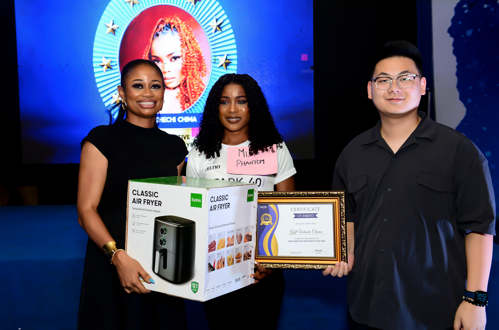
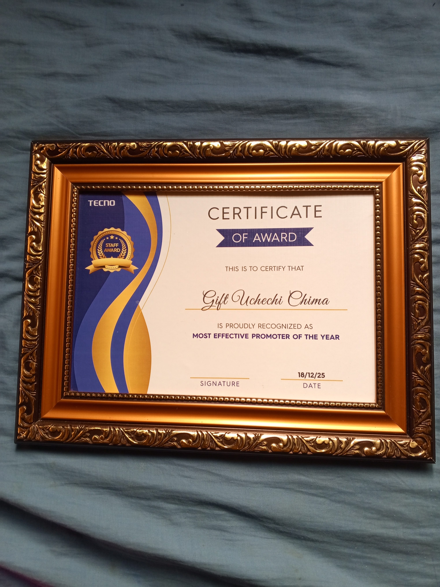
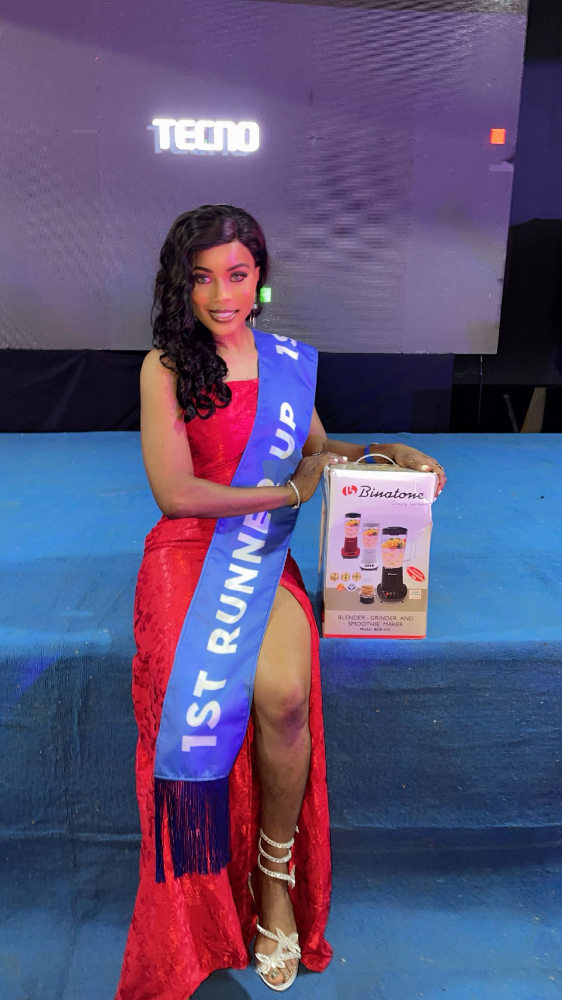
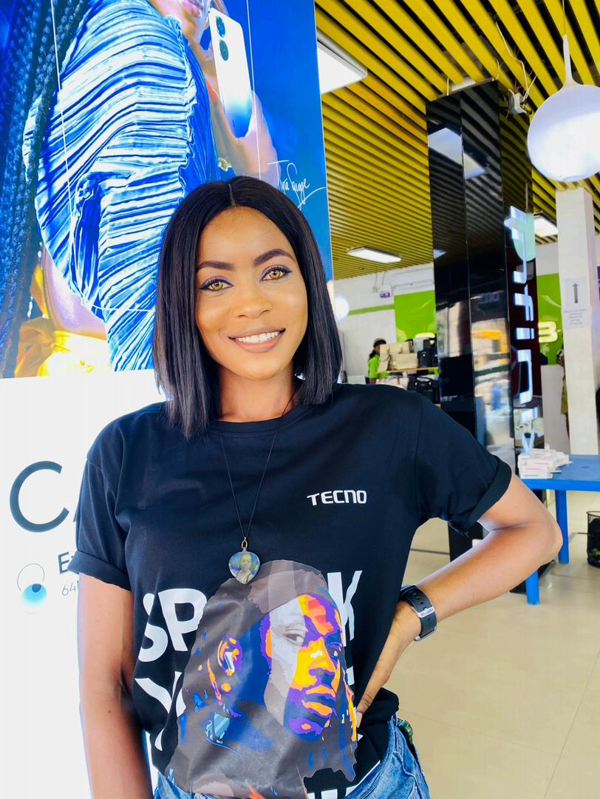
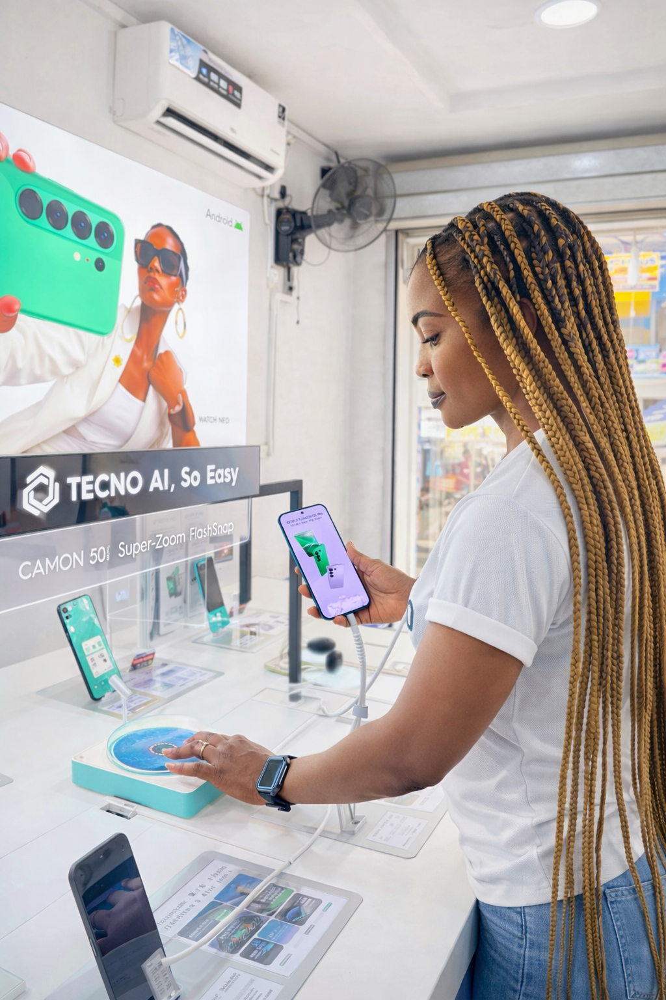
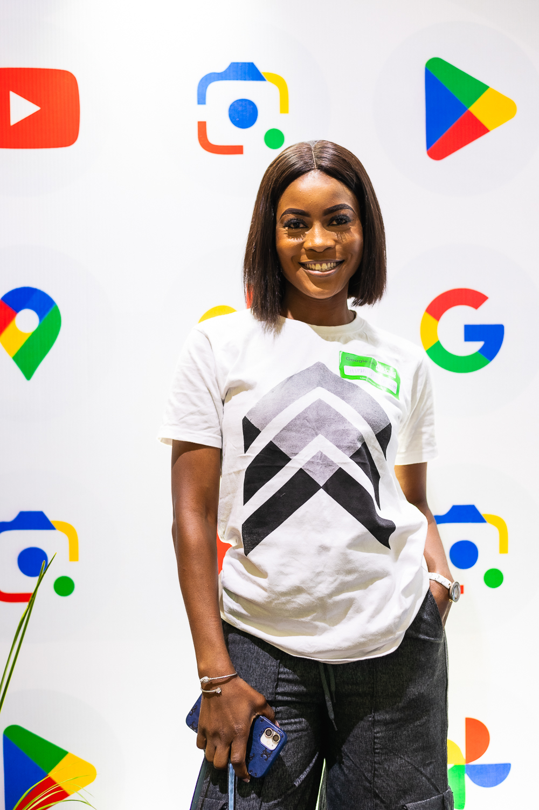
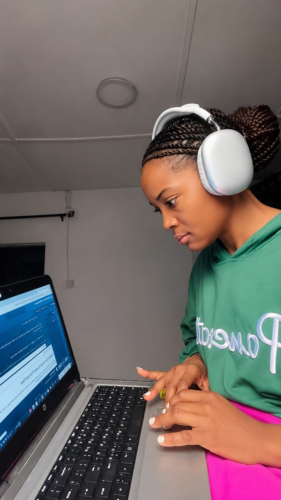
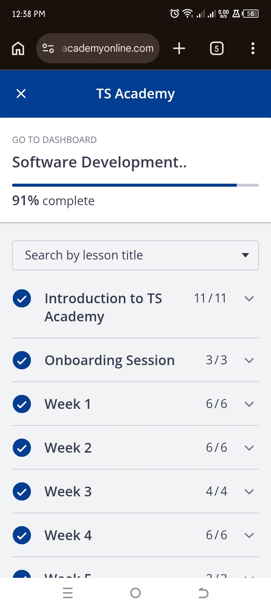
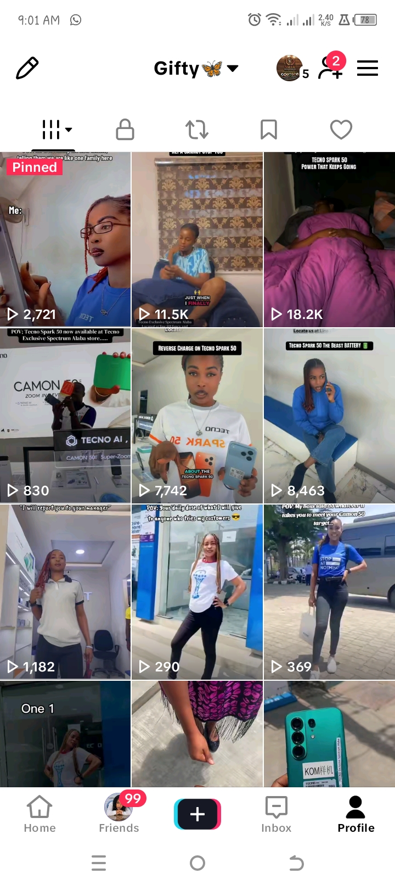
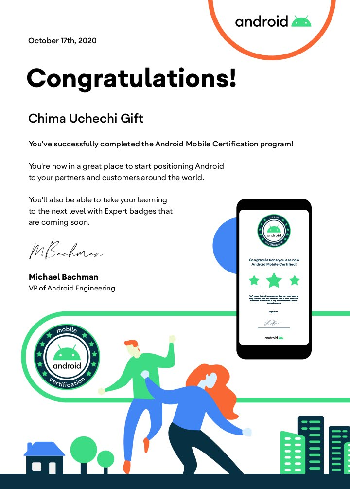

Moments & Milestones
A collection of professional experiences, achievements, learning milestones and moments that have shaped my career journey.
Professional Recognition
Recognition for dedication, performance and contribution throughout my professional journey.

Professional Recognition
Receiving recognition for outstanding performance and dedication.

Most Effective Promoter of the Year
Recognition for outstanding performance and contribution in my professional role.

A Memorable Achievement
A memorable moment from my professional journey and recognition.
Professional Experience
Practical experience gained through customer engagement, sales support and working in a fast paced business environment.

Sales Floor Experience
A snapshot of my experience working in a dynamic sales environment.

Product Display Setup
Supporting product presentation and maintaining an organised sales environment.
Professional Events
Experiences and events that provided opportunities to learn, connect and grow professionally.

Professional Event
A professional event that formed part of my career experience.
Digital Learning
I am continuously developing my digital skills and learning new tools that support my career direction.

Digital Learning
Developing my digital skills through continuous learning and practice.

Software Development Training
Building my knowledge of HTML, CSS and other digital skills through Software Development training.
Content Creation
Exploring digital content creation and learning how to communicate ideas through online platforms.

Content Creation
A snapshot of content creation and audience engagement from my digital work.
Certifications & Learning
Professional training and certifications that have contributed to my knowledge and development.

Android Mobile Certification
Certification that supports my knowledge and experience in the mobile technology environment.
Professional Profile

Looking Ahead
My journey continues as I combine years of professional experience with new digital skills and opportunities for growth.